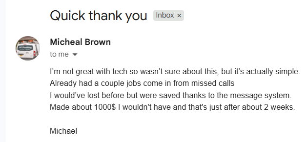

What to send first
Use the first reply that stops the missed call from turning into nothing.
For local service businesses
Miss the call. Get busy. Mean to ring them back. Lose the job.
That is the problem. We give you the exact messages, follow-up steps, and missed-call system we've already used in 30+ local businesses to stop missed calls turning into lost jobs.

Costs less than one lost job. If it does not help, I'll refund you.
What is really going wrong
The call gets missed. It goes to voicemail. You mean to ring them back. Then work gets busy and it slips. Then the job is gone. That is the leak.
It goes to voicemail, they hear nothing useful back, and the job is still up for grabs.
Then work gets busy. You forget, follow up late, or never get round to it at all.
By the time you reply, they have already moved on, gone cold, or booked someone else.
What you get
Instead of guessing what to text back, what to ask, or who still needs a callback, you get a simple missed-call process you can start using today.
Use the first reply that stops the missed call from turning into nothing.
Get the job type, area, and urgency without messy back-and-forth.
Move the conversation toward the callback, quote, or booking instead of letting it stall.
Use the simple tracker so you do not have to remember every callback and follow-up in your head.

Proof
This is not theory. It is already being used by owners who are out on jobs, driving, or with customers and needed a better next step than voicemail.
Used by real owners who cannot always answer because they are busy doing the work.
The replies and follow-up order are already there, so you are not sitting there trying to work out what to send.
Built for owners who want a practical fix they can use straight away without turning it into a project.
How it works
You reply fast, find out what the job is, and move it toward the next step before it goes cold.
So the missed caller hears from you before they move on to the next business.
Find out the job type, area, and urgency so you know whether to call back, quote, or book it in.
Use the next message and follow-up to turn that missed call into work instead of letting it die.
Why buy now
A single lost job can cost you hundreds. Fixing this costs $27.
Get the system
Get the messages, follow-up steps, and simple tracker so you are not trying to remember every reply, callback, and follow-up in your head.
Today's price
$27
Get the system for $27If it does not help, I'll refund you.
Optional at checkout
Keep losing jobs to voicemail, or fix it for $27.
FAQ
It is a simple missed-call recovery system with the messages, follow-up steps, and tracker to help you reply fast without trying to remember everything in your head.
It is built for trades and local service businesses where calls come in while the owner or team is out working and cannot always answer.
No. It is made to be simple to follow, even if you are not good with tech.
It is an optional $14 add-on at checkout with extra replies for the missed-call situations that lose jobs fastest, like after-hours calls, emergencies, price shoppers, no-response follow-ups, and quote chasers.
No. You can use it manually straight away. If you want the first message to go out automatically later, that is optional.
Optional at checkout
Extra replies for the missed-call situations that lose jobs fastest: after-hours, emergencies, price shoppers, and no-response follow-ups.
$14 one-time
Add your Stripe bump link in script.js to enable the $14 option.